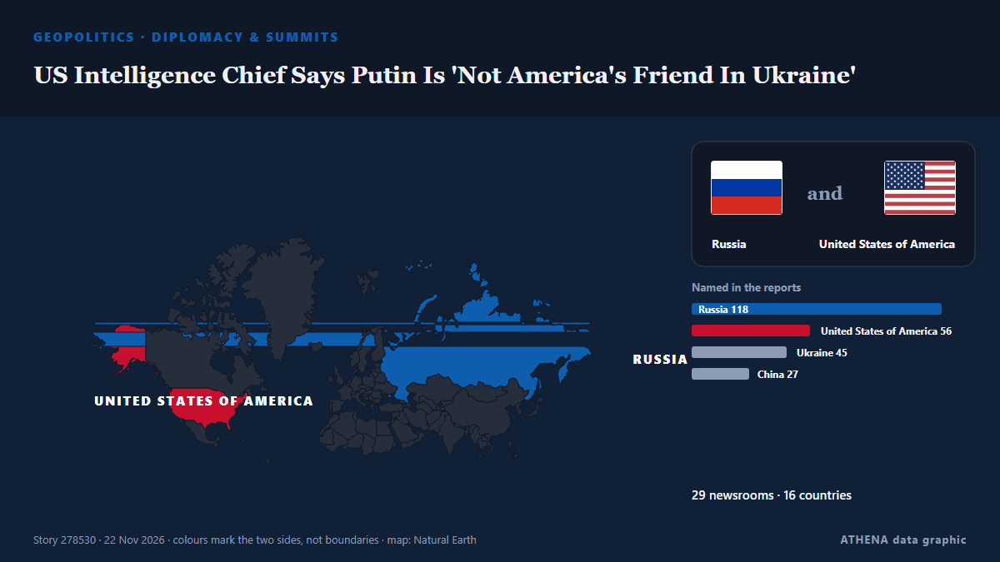

US Intelligence Chief Says Putin Is 'Not America's Friend In Ukraine'

Trump’s description of Putin as a friend during the APEC summit drew criticism from European allies of Ukraine. από The Straits Times
Τι άλλαξε 21 νέες αναφορές από 18 μέσα τις τελευταίες 24 ώρες.
Δείτε τις πηγές ›Τεκμήριωση: Ισχυρή
Αναφέρθηκε ανεξάρτητα από 31 μέσα σε 17 χώρες από τις 20 Νοε, πρώτο το Ukrainska Pravda (English)· η κάλυψη εξασθενεί. Το ATHENA εκτιμά τον κίνδυνο μέτριο (3.4/10), κυρίως λόγω της σοβαρότητάς του και της εμβέλειάς του. Βεβαιότητα 92% (υψηλή): το επιβεβαιώνουν 31 ανεξάρτητα μέσα, μέση αξιοπιστία 75%. Μέσα ανά χώρα: Ουκρανία (7), Ηνωμένο Βασίλειο (7), Ινδία (6). Κάλυψη: 20 Νοε έως 22 Νοε, 49 ώρες.
Γιατί έχει σημασία: Η πλήρους κλίμακας εισβολή της Ρωσίας στην Ουκρανία ξεκίνησε τον Φεβρουάριο του 2022. Η σελίδα παρακολουθεί τις μάχες, τα πλήγματα σε υποδομές και τη διπλωματία γύρω από τον πόλεμο, όπως τα καλύπτουν μέσα από όλο τον κόσμο.
Τι άλλαξε: 21 νέες αναφορές από 18 μέσα στο 24ωρο έως 23 Νοε.
Πρώτη διατύπωση: Trump Calls Iraq’s Zaidi ‘A Friend’
ΑυτοματοποιημένοΕπιλέχθηκε, ομαδοποιήθηκε και βαθμολογήθηκε με τη δημοσιευμένη μέθοδο της ATHENA από 27 ανεξάρτητα μέσα. Ο τίτλος είναι του μέσου· οι προτάσεις της ATHENA ακολουθούν σταθερά πρότυπα - δεν τις γράφει παραγωγική ΤΝ. Πώς λειτουργεί →
Πώς να διαβάσετε αυτή τη σελίδα
- Τι διαβάζετε
- 31 μέσα σε 17 χώρες ανέφεραν αυτό το γεγονός. Οι αναφορές παρακάτω εμφανίζονται με τη σειρά που δημοσιεύτηκαν· κάθε τίτλος ανοίγει το αρχικό άρθρο. Το ATHENA δεν γράφει δικά του ρεπορτάζ.
- Η εκτίμησή μας
- Υπό παρακολούθηση — Οι αναφορές περιγράφουν ενέργεια ή απόφαση που δεν έχει ακόμη ληφθεί, ανάμεσα σε κράτη ή ένοπλες ομάδες. Το ATHENA παρακολουθεί τι θα συμβεί στη συνέχεια. Αναζητούμε τέσσερα είδη εξέλιξης: καμία περαιτέρω ενέργεια, μια ανοιχτή ενέργεια που κάποιος αναλαμβάνει, μια ενέργεια μέσω τρίτων ή χωρίς ανάληψη ευθύνης, και ένα ατύχημα ή μια παρεξήγηση. Δεν προβλέπουμε ποιο θα συμβεί.
- Πόσα στοιχεία υπάρχουν
- Ισχυρή Πολλά ανεξάρτητα μέσα σε πολλές χώρες περιγράφουν το ίδιο γεγονός.
Αφού αφαιρεθούν οι επαναλήψεις, τα άσχετα και τα παλιά στοιχεία, υπολογίζονται 23 από τις 40 αναφορές που παρατίθενται· το 98% των τίτλων αντιστοιχεί στο γεγονός.
- Τι δεν σημαίνει
- Το ATHENA μετρά πώς καλύπτεται ένα γεγονός, όχι αν είναι αληθές. Δεν είναι πρόβλεψη, κρίση για το ποιος έχει δίκιο ή συμβουλή.
- Τι θα την άλλαζε
- Αναφορές από άλλα ανεξάρτητα μέσα που δείχνουν διαφορετική εξέλιξη, ή σαφής επιβεβαίωση ή διάψευση από επίσημη πηγή.
Εκτίμηση R2 · ανανεώνεται με κάθε ενημέρωση της σελίδας. Το ATHENA δεν έχει δημοσιεύσει ακόμη ιστορικό επιδόσεων για αυτές τις εκτιμήσεις· όταν το κάνει, θα συνδέεται εδώ.
Με μια ματιά
Επιλέγεται, βαθμολογείται και γράφεται από τη δημοσιευμένη μεθοδολογία του ATHENA. Κανένας συντάκτης δεν παρεμβαίνει σε μεμονωμένα γεγονότα. Πώς παράγεται ›
| 20 Nov 18:00 UTC | 4 |
|---|---|
| 20 Nov 20:00 UTC | 2 |
| 20 Nov 22:00 UTC | 3 |
| 21 Nov 00:00 UTC | 1 |
| 21 Nov 02:00 UTC | 0 |
| 21 Nov 04:00 UTC | 3 |
| 21 Nov 06:00 UTC | 2 |
| 21 Nov 08:00 UTC | 4 |
| 21 Nov 10:00 UTC | 0 |
| 21 Nov 12:00 UTC | 1 |
| 21 Nov 14:00 UTC | 0 |
| 21 Nov 16:00 UTC | 0 |
| 21 Nov 18:00 UTC | 0 |
| 21 Nov 20:00 UTC | 0 |
| 21 Nov 22:00 UTC | 2 |
| 22 Nov 00:00 UTC | 1 |
| 22 Nov 02:00 UTC | 1 |
| 22 Nov 04:00 UTC | 0 |
| 22 Nov 06:00 UTC | 2 |
| 22 Nov 08:00 UTC | 1 |
| 22 Nov 10:00 UTC | 2 |
| 22 Nov 12:00 UTC | 1 |
| 22 Nov 14:00 UTC | 2 |
| 22 Nov 16:00 UTC | 6 |
| 22 Nov 18:00 UTC | 4 |
| 22 Nov 20:00 UTC | 1 |
| 20 Nov 19:36 UTC | 0.0 |
|---|---|
| 21 Nov 09:00 UTC | 1.9 |
| 21 Nov 10:07 UTC | 3.2 |
| 21 Nov 11:50 UTC | 4.0 |
| 23 Nov 01:14 UTC | 3.4 |
Γιατί αυτοί οι αριθμοί
Σημασία
Πόσο πολύ και πόσο εμφανώς αναφέρεται η είδηση.
Κίνδυνος
Τι περιγράφουν οι αναφορές, βαθμολογημένο για πιθανή ζημιά. Δεν είναι πρόβλεψη.
Βεβαιότητα
Πόσο καλά την στηρίζουν οι ανεξάρτητες πηγές.
Η κάλυψη — ποιος το ανέφερε και πότε
ο τίτλος όπως δημοσιεύτηκε · ανοίγει το πρωτότυπο- Ukrainska Pravda (English) · ΟυκρανίαZelenskyy responds to Trump calling Putin his friend: "For us, he is an enemy and a killer"
- Belfast Telegraph · Ηνωμένο ΒασίλειοTrump defends calling Putin his ‘friend’ but won’t say if he is a friend to US
- The Straits Times · ΣιγκαπούρηTrump defends calling Russia’s Putin a friend, but says he ‘can’t speak’ to whether he’s a friend to the US
- Kurdistan24 (English) · ΙράκTrump Calls Iraq’s Zaidi ‘A Friend’
- The Independent · Ηνωμένο ΒασίλειοTrump can’t stay on topic as he rambles through Iran, potholes and his ‘friend’ Putin in 90-minute press conference
- Rolling Stone · Ηνωμένες ΠολιτείεςTrump Says He ‘Can’t Speak To’ Whether Russia is a Friend to America
- The Irish News (Belfast) · Ηνωμένο ΒασίλειοTrump defends calling Putin his ‘friend’ but won’t say if he is a friend to US
- Kyiv Post · Ουκρανία‘For Us, He Is a Killer’: Zelensky Rebukes Trump for Calling Putin a ‘Friend’
- NDTV World · ΙνδίαZelensky Says Putin A "Killer" After Trump Calls Him His "Friend"
- The Straits Times · Σιγκαπούρη‘He’s a killer’: Zelensky on Putin after Trump calls Russian leader a ‘friend’
- Ukrinform (English) · Ουκρανία'To us, he is enemy and murderer': Zelensky on Putin, whom Trump called friend
- Ada Derana · Σρι ΛάνκαZelenskyy says Putin a 'killer' after Trump calls him his 'friend'
- NDTV World · ΙνδίαTrump Calls Putin His "Friend", Says Not Sure If He Is "To America"
- Euronews English · ΓαλλίαPutin a 'killer,' Zelenskyy says after Trump calls Russian leader his 'friend'
- Nile Post · ΟυγκάνταZelensky says Putin is a 'killer' after Trump calls Russian leader a friend
- BBC News · Ηνωμένο ΒασίλειοZelensky says Putin is a 'killer' after Trump calls Russian leader a friend
- The Korea Times · Νότια ΚορέαTrump defends calling Putin a friend, unsure if he's a friend to US
- Times of India · ΙνδίαFriend to Trump, 'killer' for Ukraine: Zelenskyy hits back as winds of winter looms
- News of Bahrain · ΜπαχρέινTrump Calls Him His 'Friend', Zelensky Calls Him 'Enemy' and 'Killer'
- Türkiye Today · ΤουρκίαZelenskyy calls Putin a 'killer' after Trump describes him as 'friend'
- The Independent · Ηνωμένο ΒασίλειοTrump doubles down on ‘friend’ Putin with intimate photo tribute on Truth Social
- Ukrainska Pravda (English) · ΟυκρανίαTrump posts photo of himself with Putin captioned "my friend"
- Anadolu Agency (English) · ΤουρκίαUS senator slams Trump for calling Putin 'friend'
- TASS (English) · ΡωσίαDmitriev comments on Trump’s post about friendship with Putin
- Forbes Business · Ηνωμένες ΠολιτείεςPutin Conjures Nuclear Strikes On EU, Drones Against Its Diplomats
- The Korea Times · Νότια ΚορέαTrump again calls Putin 'friend' despite criticism in US
- Kyiv Post · ΟυκρανίαTrump Posts ‘My Friend’ Photo With Putin, Compares Shenzhen Summit to Yalta
- The Irish News (Belfast) · Ηνωμένο ΒασίλειοMinister condemns Trump’s embrace with ‘butcher’ Putin
- Belfast Telegraph · Ηνωμένο ΒασίλειοMinister condemns Trump’s embrace with ‘butcher’ Putin
- Ukrainska Pravda (English) · ΟυκρανίαUK government minister says "butcher" Putin is no friend of the United Kingdom
- The Hill · Ηνωμένες ΠολιτείεςLive updates: Clayton calls Trump's trilateral talks 'remarkable'; Foxx concedes to Hubbard in North Carolina
- The Hill · Ηνωμένες ΠολιτείεςClayton says he trusts Trump 'completely' after calling Putin a friend
- Ukrainska Pravda (English) · ΟυκρανίαUK right-wingers distance themselves from Trump: Putin is not our friend
- The Straits Times · ΣιγκαπούρηUS intelligence chief says Putin is ‘not America’s friend in Ukraine’
- Business Recorder · ΠακιστάνUS intelligence chief says Putin is 'not America's friend in Ukraine'
- Deccan Herald · ΙνδίαUS intelligence chief says Russian Prez Vladimir Putin is 'not America's friend in Ukraine'
- The Hill · Ηνωμένες ΠολιτείεςDirector of National Intelligence: Putin is 'not America's friend in Ukraine'
- Times of India (World) · Ινδία'He's not America's friend in Ukraine': US spy chief on Putin days after Trump's praise
- NDTV · ΙνδίαUS Intelligence Chief Says Putin Is 'Not America's Friend In Ukraine'
- Stuff · Νέα ΖηλανδίαLuxon calls Vladimir Putin a ‘killer’ after Trump called him a ‘friend’